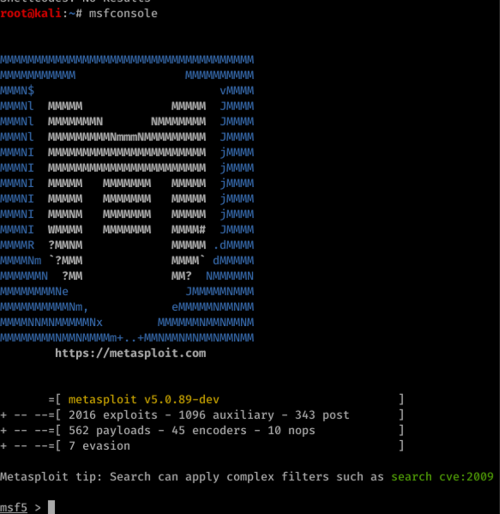

Le projet avait pour objectif d’évaluer le niveau de sécurité de cinq machines sélectionnées afin d’identifier les failles potentiellement exploitables
par un attaquant. L’intention principale était de simuler des techniques utilisées dans des scénarios réels d’intrusion, en s’appuyant sur des méthodologies
reconnues, afin de déterminer le niveau d’exposition des systèmes et de fournir des informations utiles pour améliorer leur protection.

Le travail réalisé s’est déroulé en plusieurs étapes. Il a débuté par une phase de reconnaissance et d’énumération destinée à analyser la surface d’attaque
de chaque machine. Des tests ont ensuite été effectués sur les services exposés, les configurations internes et les modules applicatifs. Des tentatives
contrôlées d’exploitation ont également été menées afin de vérifier si les vulnérabilités identifiées étaient réellement exploitables dans un contexte
opérationnel. Tout au long de l’analyse, les vecteurs d’attaque possibles, les comportements inattendus et les faiblesses observées ont été soigneusement
documentés. L’impact potentiel de chaque faille a été évalué afin de déterminer les risques que représenterait son exploitation par un attaquant non
autorisé.
Les résultats du projet ont permis de mettre en évidence plusieurs types de failles sur les cinq machines étudiées. Parmi celles-ci figuraient des
configurations insuffisamment sécurisées, des services exposés sans protection adaptée, des logiciels obsolètes ainsi que des fonctionnalités pouvant être
détournées de manière malveillante. Chaque constatation a été accompagnée d’un niveau de sévérité, d’une analyse d’impact et de recommandations spécifiques
permettant de réduire les risques associés. Ce travail a donc permis d’obtenir une vision claire de l’état de sécurité des systèmes et d’établir des
actions concrètes pour renforcer leur protection